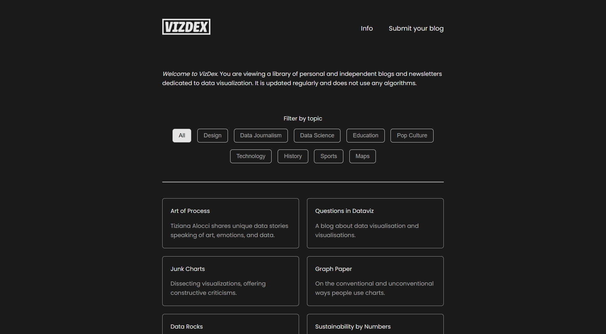

VizDex
VizDex is a library of personal and independent blogs and newsletters dedicated to data visualization.
VizDex was created to serve as a direct, curated portal for discovering exceptional data visualization content. In an era of algorithm-driven feeds, the platform leverages the enduring power of RSS to connect users directly with insightful, creative, and captivating data visualization blogs and newsletters. It's a resource built from a passion for data exploration, designed to share valuable discoveries and foster connection within the data visualization community.

The site design
The site as a whole was inspired by Blogroll.org, a project with a much larger goal to catalogue independent blogs of all types. The simplistic, text-based design lends itself well to finding what you're looking for more directly without leveraging importance of any one entry.
I wanted the site to randomize entries each time you visited, allowing each entry an equal chance to be viewed at the top, preventing any bias.
I wrote a blog post which delves more into the background of how and why this site was built.

The branding
The logo embodies a minimalist yet impactful design philosophy. The primary logo is a clean, horizontal, type-based mark, prioritizing legibility and a modern aesthetic. This streamlined approach ensures the brand name is clearly communicated without unnecessary embellishment. Complementing this, a square, stacked version of the logo serves as the favicon, maintaining brand consistency across different digital touchpoints while adapting to smaller display requirements.
This deliberate simplicity in the logo's design, along with its bold presence, ensures it integrates seamlessly into the overall user interface without overwhelming or distracting from the site's primary content—the curated data visualization blogs. It acts as a strong, understated identifier, reinforcing the site's focus on clarity and directness in its presentation of information.
![A screenshot of the Mini Brand Style Guide for VizDex. The guide presents the primary logo and favicon, both featuring the VIZDEZ text within a rectangular border. It specifies Urbana as the logo font, with examples of its regular and bold italic styles, including numbers and symbols. The Colors section displays three swatches: Cod Gray, Mercury, and Silver Chalice, along with their respective HEX, RGB, and CMYK values. Lastly, Poppins is identified as the web font, showcased in regular, italic, light, and light italic styles, accompanied by numbers and symbols. The design credit to William Careri is visible at the bottom.](../assets/images/portfolio/vizdex-brand.png)